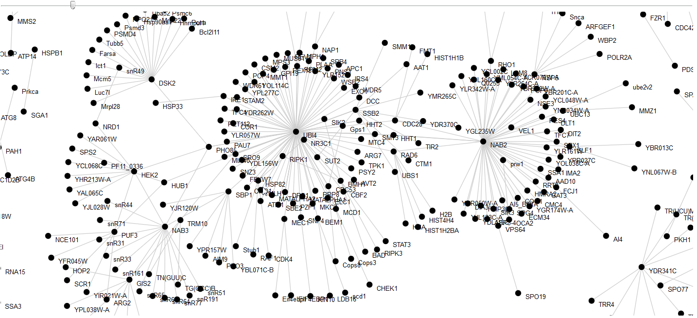

VisPNet
Introduction
Purpose of VisPNet
VisPNet is an interactive parallel coordinates plot visualization tool created to visualize network(s) based on their properties instead of the raw node and edge data. Cytoscape, Gephi, and Biolayout Express3D are better suited for traditional visualization and exploration based on network layout or path-driven analysis. VisPNet on the other hand lets users explore structures and features of a network that rise from its internal properties (e.g. centrality, edge weight distribution, annotated metadata). Brushing along the axes on VisPNet allows for a cleaner filtering based on the properties of interest. If the brushed/filtered results end up giving less than 400 units (nodes or edges), the result is also displayed as a node-link diagram to visualize the raw graph data using a force-directed layout.
Parallel Coordinates Plots
Parallel Coordinates Plots is a visualization technique to visualize multidimensional data. The dimensions are drawn as parallel axes. A line connecting the coordinates on each axis is drawn to indicate a data point in that high dimension. In this context, VisPNet suggests that a network element (i.e. an edge or a node) is represented by various graph properties associated with that element, and any relevant metadata.
A generic example of parallel coordinates plot Screenshot of parallel coordinates plot from VisPNet
Format of the processed CSV
VisPNet needs a CSV that can be visualized on a parallel coordinates plot. The user is expected to generate the CSV from their network with appropriate graph measures. The built-in sample networks are in extended edge-list format, where each row of the CSV describes an edge and its properties. Rows are the drawn curves on VisPNet plot. Each of the columns in the CSV file are represented by an axes of parallel coordinates plot of VisPNet. An axis can represent nominal, ordinal, interval, or ratio values. If a nominal or ordinal axes has to show more than forty (40) labels, the axes is hidden from the VisPNet view to avoid making the labels unreadable. Hidden or not, that full set of data can however be searched in the result table using the search box above the table.
Following screenshot shows a chunk of CSV file representing edges of a protein-protein interaction network where first two columns are nodes connecting edges (i.e. "Official.Symbol.Interactor.A" and "Official.Symbol.Interactor.B"). Remaining columns of the file are various properties of the edges. The third and fourth columns represent experimental method used to establish the protein interaction from first two columns, and the Score from the experimental method. For this example, a score column value of -1 represents lack of a score. The last two columns are two different centrality measures of the edges.

Usage
Provide a URL of the CSV file with all the network data
VisPNet Github repository has an R script that utilizes the igraph package to help you process network of your choice and output a CSV file in an extended edge-list format, where first two columns are the nodes adjacent to edges. Remaining columns describe relevant properties of interest, such as edge weight, edge centralities, and meta data.
VisPNet is portable and can be used safely without server-side access. To keep it so, VisPNet makes an async GET call to fetch the CSV file using javascript. Any publicly accessible URL for the CSV file is acceptable. If you have lots of files to process and you would rather access them locally, you can download VisPNet source code and run it on a local Web server. The README has instructions on how to provide local CSV files for VisPNet processing.
Click on the Fetch button to start processing the CSV. If the CSV is inaccessible via the given URL, an error will be shown.
Controls for the parallel coordinates plot
For a larger network, you'll see a spinning progress bar (shown below) while the data is being drawn. Upon completion, the progress bar will indicate as such. You can interact with the plot right away; no need to wait for processing to finish.
VisPNet allows brushing along the axes, reordering axes, and inverting axes. Following list shows the basic controls of the plots.
Remove Brush: Tap the axis background.
Invert Axis: Double click on an axis label to invert the axis.
Result Table and Search
The CSV data that was imported into VisPNet, and got brushed on PCP, is presented here in a tabular form. For larger result set, up to a hundred rows are shown. The table updates based on the filtering / brushing of the parallel coordinates plot (PCP). Hovering over the table entries highlights the appropriate plot line on the PCP.
The table entries can be searched using the search box. The search results are shown with green background to indicate the filtering beyond the ones done through brushing of the PCP.
Node-link diagram
Node-link diagram shows the nodes and edges of the brushed subset of the data. VisPNet shows a node-link diagram for a brushed result with less than 500 edges. The number is an arbitrarily chosen small number that should be able to keep the Web page performant without introducing lag. This cutoff can be changed from the source code. Look for node_link_maxsize variable in pcp.js javascript source file.
The node-link diagram also provides a gravity slider. A gravity slider allows variations in the pull of the nodes and edges to the center of the viewport. A high gravity value would keep all the visual elements close together at the center of the diagram viewport. A low value would spread them out, often beyond the viewport.
Modifying and/or running your own instance of VisPNet
The source code is provided under the MIT license on Github. To skip the first step of providing a URL and instead to directly fetch the network file, go to pcp-supporters.js javascript source file. Move the d3.csv(csvurl) multi-line section out of the #csv-process-btn trigger, and place it at the beginning of the file with your desired url.
Sample networks
There are three sample networks provided for you to try VisPNet.
- BioGRID PPI
This is a subset of all protein-protein interactions available via BioGRID v.3.2.121. The interaction data was downloaded, processed to remove entries that would result in same undirected edge on the network, and processed using igraph in R. - Yeast Gene Co-expression
This is a yeast gene co-expression network created using microarray experiment data published by Fournier et.al. (2010). The experiment was a time-series experiment to gain insight into role of ggc1 in rapamycin response of yeast. - Multiple Networks
This example is to showcase multi-network comparison through VisPNet. The underlying CSV file was created using a simulated random network. A Barabasi-Albert network with 10,000 nodes was created in igraph/R. The network was rewired multiple times, and each of the rewired networks was added to CSV as a different network to compare against the original network. This program was written entirely in a R script, which is available at the VisPNet GitHub repository.